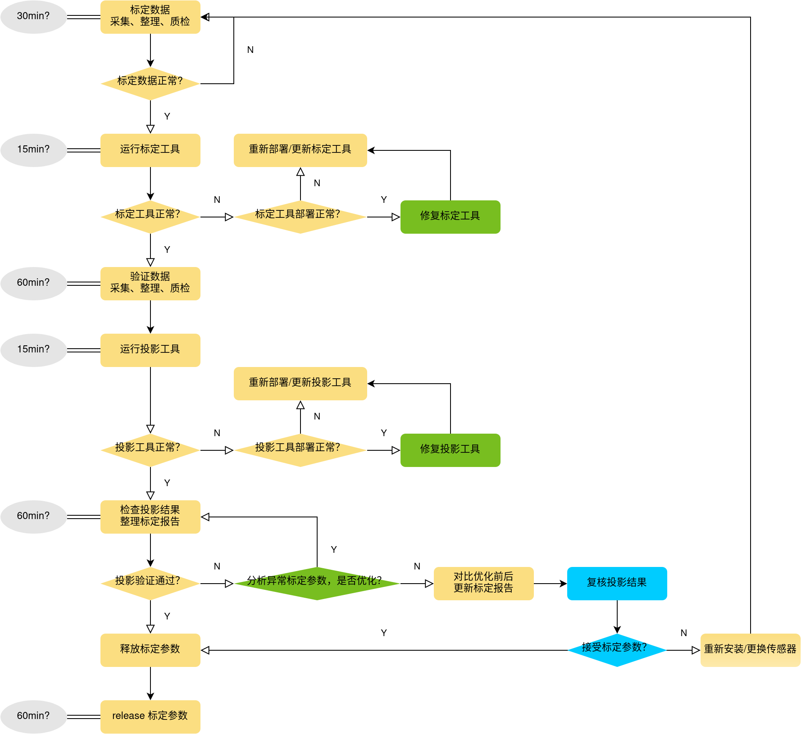

Calibration process v1.0
|
abbreviation |
Responsible |
Task |
|
DataChain |
rMA Liang (BCSC-EPA1, XC-DX/PJ-W3-PMT) |
Defining/projection tool deployment |
|
VAL |
DONG Shitao (XC-DX/PJ-W3-VAL1) |
Calculation/Verification Data Collection Book/projection tool use |
|
VER |
ZHANG Zihan (BCSC-EPA1, XC-DA/PJ-W3-VER) |
|
|
PER calibration |
LI Han (XC-DX/PJ-W3-PER3) |
Development/projection tool development |
|
PER user |
TANG Yazhe (XC-DX/PJ-W3-PER2) LA Lei (XC-DX/PJ-W3-PER1) |
Calibration parameter review |
Remarks: In the time -consuming and optimization of each step, the "tool deployment to the end of the car + related tools" will be improved significantly after the efficiency will be significantly improved

PIPELINE implementation details & precautions & optimization direction
1、 Calculation/Verification Data Collection
When using the NVIDIA driver to capture the image, some cameras have failed to collect, and historical data is not covered, and it is not copied. It is recommended to use script automation. The reference process is as follows:
Clear the temporary folder saved by the platform camera image
Catch the platform camera image
Copy to the target folder
The naming, suffix, data integrity, quantity, size, etc.
2. Standard data Quality Inspection
Confirm that the door is closed, the hood is closed, the trunk is turned off, the exterior mirror is expanded, the high beam is turned off, the wiper is turned off, and the tire pressure is normal
Block the roof glass to avoid interference caused by laser beam reflexes
After starting the middle device, confirm that the vehicle dies in the middle and front wheels.
In addition to drivers and operators, avoid other personnel from getting on the car (it is recommended that the front driver, the rear driver side -by -side stubble)
3. Verify data check
The vehicle is still, Stop on horizontal pavement
Weather requirements:
The light cannot be too dark, affecting the camera imaging
Avoid rainy road water water, leading to laser radar mirror reflection
Avoid the wind, the angle of the leaves of the leaves will shake
The collection time interval of calibration data and verification data is as short as possible
Avoid dynamic objects such as other vehicles and pedestrians around
The street light pole, traffic rod, signal light, transportation card, fence, power distribution box, building, static vehicles are rich (all must, try to be as much as possible)
The ground is flat, the parking line is rich in texture (only for the surrounding camera, the underground garage can be selected)
Load calibration data collection is consistent
4. Standard/projection tool
Release plan and version description calibration_tool_release
Release location https://sourcecode01.de.bosch.com/projects/PJW3/repos/w3_eng_calib_tools/browse
5. Project verification passed
according to Sensor calibration parameter acceptance standard The first screen of the abnormality of the different sieve, through TR feedback to Per Calibration
TR title: [TPM :: PER3] frame number + calibration date
TR description: abnormal sensor name
TR attachment: Projection results check tool v2.0
Per Calibration confirms whether the sensor is abnormal and determine whether it can be optimized
Can be optimized: update the calibration parameter and projection results, optimize the original data plus suffix "_RAW" backup
Can't optimize: Explain the reason, Per User is judged whether it can be accepted
6. Compare optimization before and after, update the calibration report (only the final conclusion of the abnormal sensor for the use of the party for acceptance)
7. Per Calibration cannot be optimized , TR continues Give feedback to PER user
Acceptance: Release calibration parameters
Unacceptable: reinstall or replace the sensor, re -calibrate
attention
Don't ask Per Calibration a car benchmark?Can you help marked a car?Is there a problem with a car and a sensor?Please contact first: count the car @Dong Shitao, function car @zhang zihan
The data that flows into Per Calibration must exclude "calibration/verification data abnormality" (such as file error, dynamic collection, data non -synchronization, sensor data abnormalities, etc.)
The data flowing into Per User's re -examination is limited to Per Calibration to confirm that the uncomfortable abnormal sensor (such as M1 lidar data quality problem)
M1 LIDAR will be checked (Per Calibration development) before calibration.
There are high reverse phenomena such as white light rods and vehicles, which will cause problems such as cloud expansion and inaccurate contours. If other frames are in the same location, it can be considered to be calibrated.